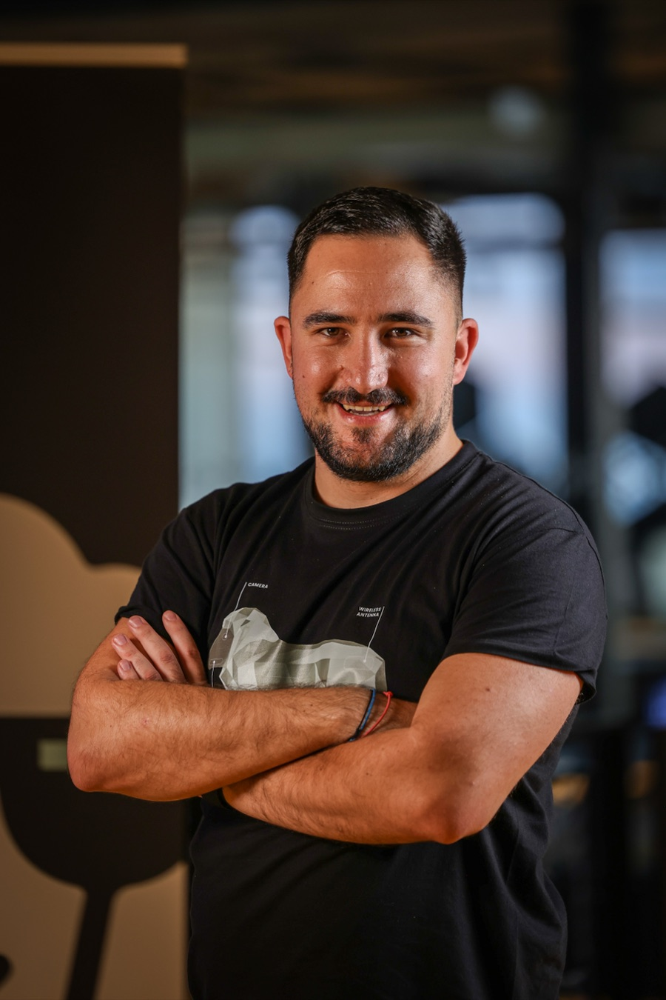

Product strategy, proposition definition, roadmap development, service design and mobility product planning.
Žilić Consult
Product, market and growth consulting.
Independent consulting for technology and mobility companies navigating product strategy, market entry, fundraising and enterprise growth.
Services
Focused support across product, market, funding and growth.
Market validation, customer segmentation, positioning and go-to-market readiness before launch.
Market assessment, geographic expansion, launch planning, local partnerships and operational setup.
Pricing strategy, packaging, value metrics and commercial models for enterprise products and services.
Fundraising strategy, investor narrative, pitch deck development, data-room preparation and process readiness.
Robotaxi programme setup, customer experience, operational readiness, product requirements and launch support.
Temporary senior product or programme leadership for defined transformation, launch or growth periods.
Executive advisory, strategy workshops, commercial reviews, vendor evaluation and decision support.
How I work
Flexible engagements. Clear outcomes.
I work with founders, leadership teams and product organisations on defined product, commercial and operational objectives. Each engagement is structured around a clear scope, practical outcomes and agreed deliverables.
- Fixed-scope strategy projects
- Fundraising and pricing sprints
- Monthly advisory retainers
- Interim leadership mandates
Engagements can run alongside other client work, subject to confidentiality and conflict-of-interest requirements.

About
Tonći Žilić — from hypercars to driverless fleets.
I have spent my career on products and programmes where hardware, software and operations have to work at the same time: hypercars, connected vehicle services, autonomous mobility and the companies around them. I joined Rimac Automobili among its first hundred employees, held product and programme roles at Rimac Technology and Verne, and have since co-founded two companies of my own.
That mix is what I bring to a mandate: enough engineering literacy to hold a technical argument, enough commercial judgement to keep it tied to a business case, and the operational habit of getting a launch over the line. I work directly with founders and executives, in small scope, without an agency layer.
Automotive
Autonomous mobility
Connected vehicles
Founder
Product leadership
Experience
Built through complex products, programmes and launches.
Background across automotive, connected vehicles, digital products and autonomous mobility, including product and programme roles on high-complexity vehicle and robotaxi programmes.
Previous experience includes Rimac and the Verne robotaxi programme, spanning product definition, programme leadership, mobility operations and market launches. That experience informs practical support from early product decisions through commercial and operational readiness.
Professional background and previous experience — not consulting clients.
01
SheepAI
Co-founder
Co-founded and currently building the company, with responsibility for product direction and the commercial side alongside a small team.
02
Serenity
Co-founder & CEO
Co-founded and led as CEO, with accountability for strategy, product and day-to-day operations.
03
Verne
Robotaxi product and programme
Robotaxi product and programme work: product definition, rider experience, product requirements, operational readiness and launch preparation for an autonomous mobility service.
Product and programme leadership
Product and programme leadership on automotive-grade development, delivered against production timelines, technical requirements and automotive quality expectations.
Digital and connected vehicle products — first 100 employees
Joined among the first hundred employees and grew with the company, working on connected vehicle services and automotive digital products while the organisation, processes and product were all being defined at once.
Selected capabilities
Where the work usually sits.
- Product and mobility strategy
- Market validation and positioning
- Go-to-market readiness
- Market-entry and launch planning
- B2B pricing and packaging
- Pre-seed and seed fundraising
- Investor narrative and materials
- Programme leadership
- Mobility operations
- Robotaxi product definition
- Partner and vendor evaluation
- Executive decision support